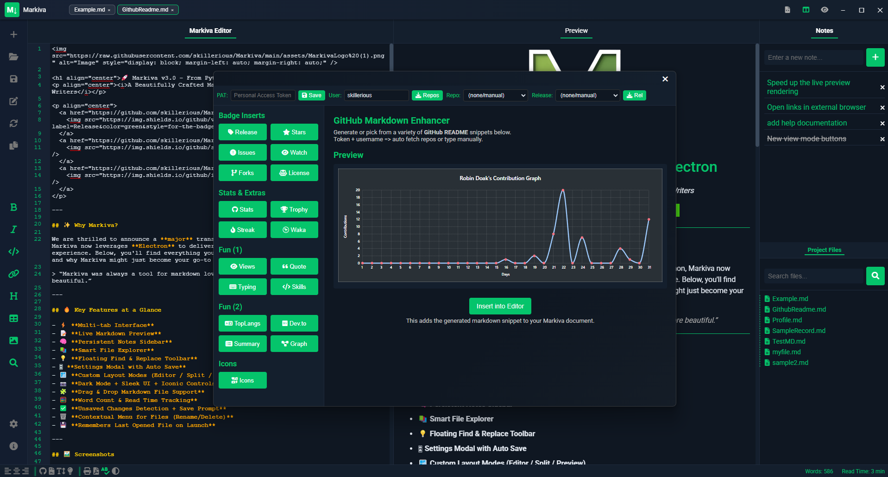

Showcase
Explore Markiva in Action
Live Markdown Preview
See your formatted text in real-time.

Custom Themes
Tailor Markiva to match your style or brand.

Collaboration
Work together on markdown docs seamlessly.